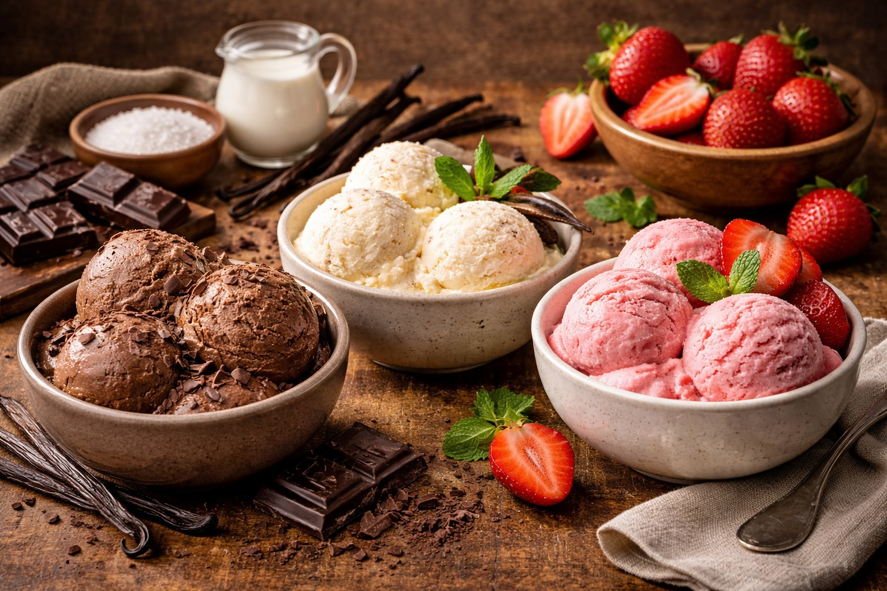

Whole Foods Recipes: Homemade Ice Cream
Last updated: March 31, 2026

A simple homemade ice cream built from real ingredients. One base, multiple variations: chocolate, vanilla, and strawberry.
Key takeaways
- One base, many flavors — master once, reuse forever.
- Real ingredients — no gums, no stabilizers.
- Custard = smooth texture
- No machine needed
Base Ingredients
- 2 cups whole milk
- 1 cup heavy cream
- 4 egg yolks
- ½–¾ cup sugar
- Pinch of salt
Base Method (used for all flavors)
- Warm milk + cream (do not boil)
- Whisk yolks + sugar
- Temper eggs with warm milk
- Cook on low until slightly thick
- Remove from heat
Chocolate Ice Cream
- 3–4 oz dark chocolate (70–90%)
Add chocolate after removing from heat. Stir until smooth.
Vanilla Ice Cream
- 1–2 teaspoons pure vanilla extract
Add vanilla after removing from heat.
Strawberry Ice Cream
- 1–1.5 cups fresh strawberries
- Optional: 1–2 tbsp sugar
Blend strawberries and add after custard cools slightly.
Chill + Freeze
- Refrigerate 2–4 hours
- Freeze in shallow container
- Stir every 45–60 minutes (2–3 times)
- Freeze until firm
Notes
- Higher fat = creamier texture
- Shallow container reduces ice crystals
- Let sit 5–10 minutes before serving
Next steps
Continue with more Whole Food Cooking.
This article focuses on general food quality and cooking with quality ingredients, not medical advice.